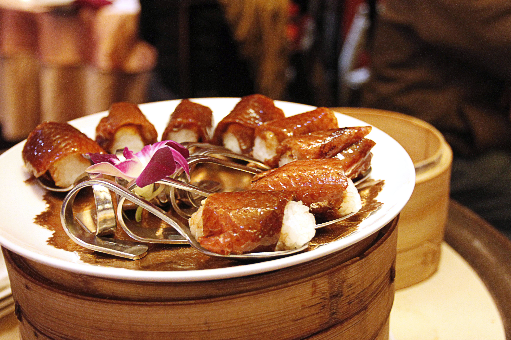

Explore Yilan: The Sanctuary of Taiwan
Welcome to Yilan
Located on the northeast coast of Taiwan, Yilan is a haven of relaxation known for its lush mountains, cold and hot springs, and sweeping ocean views. It offers a perfect blend of indigenous culture, agricultural beauty, and culinary delights.
What to Do?
National Center for Traditional Arts

Immerse yourself in Taiwanese heritage at this sprawling cultural park. Wander through old streets featuring traditional red-brick architecture, watch live folk opera performances, and try your hand at DIY crafts like pottery and indigo dyeing.
Guishan Island (Turtle Island)

A volcanic island shaped like a turtle, this is a landmark of Yilan. It is one of the best spots in Taiwan for whale and dolphin watching tours. The area is famous for the "Milky Sea" phenomenon where underwater hot springs mix with the ocean.
What to See?
Lanyang Museum

An architectural masterpiece designed to look like a "cuesta" rock formation emerging from the wetlands. The museum showcases the geography, history, and culture of the Lanyang Plain, blending seamlessly with the surrounding environment.
Jiaoxi Hot Springs

Unlike most sulfur springs, Jiaoxi offers odorless and colorless sodium bicarbonate hot springs, often called "Beauty Soup" for their skin-smoothing properties. It is the perfect place to unwind after a day of exploring.
Where to Eat?
Luodong Night Market

One of Taiwan's most friendly night markets. Must-try local specialties include Sanxing Scallion Pancakes, Mutton Soup with herbal medicine, and Dragon Phoenix Legs (fried meat rolls).
Yilan Cherry Duck (Red Lantern)
Yilan is famous for its high-quality duck. The "Cherry Duck" roasted to perfection is a crispy, juicy delicacy often served in multiple courses (such as duck sushi) at top-tier restaurants like Silks Place.